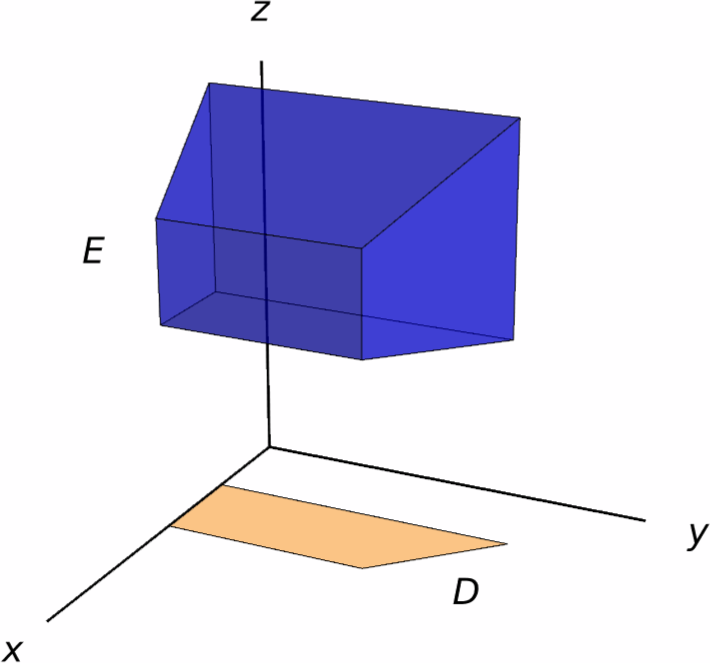
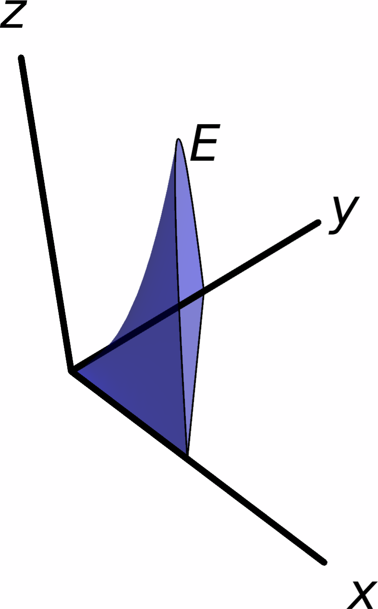

Triple Integrals
In this section we discuss how to compute the (triple) integral of a function of three variables. The methods that we will see here are essentially the same as those discussed in the case of double integrals.
Triple Integrals over Boxes
The three-dimensional version of a rectangle is a (rectangular) box. A box in $\RR^3$ is a set of the form \[ R=[a,b]\times [c,d]\times [r,s] = \big\{(x,y,z)\mid a\leq x\leq b,\,c\leq y\leq d,\,r\leq z\leq s\big\}. \]
Our first course of action is to define the triple integral of a function $f(x,y,z)$ on the box $R$.
The process is very similar to the two-dimensional case: take sequences of numbers \[ \begin{aligned} &x_0=a < x_1 < \cdots < x_{m-1} < x_m = b,\\ &y_0=c < y_1 < \cdots < y_{m-1} < y_n = d,\\ &z_0=r < z_1 < \cdots < z_{m-1} < z_p = s. \end{aligned} \] such that the distance between each $x_i$ and $x_{i+1}$ is $\Delta x$, the distance between each $y_j$ and $y_{j+1}$ is $\Delta y$, and the distance between each $z_k$ and $z_{k+1}$ is $\Delta z$. These sequences allow us to partition $R$ into the subboxes \[ R_{ijk}=[x_{i-1},x_i]\times [y_{j-1},y_j]\times [z_{k-1},z_k], \] whose volume is $\Delta V\Delta x\Delta y\Delta z$.
Now, for each subrectangle $R_{ijk}$, choose a point $q_{ijk}$ contained inside it. These choices allow us to form the sum \[ \sum_{i=1}^n\sum_{j=1}^m\sum_{k=1}^pf(q_{ijk})\Delta V. \]
Just as in the case of two variables, most of the functions that we will be working with are automatically integrable:
In addition, while the definition that we gave for the triple integral is conceptually useful, it is not practical for actually computing integrals. However, Fubini's theorem still applies in this case:
Suppose $R=[a,b]\times[c,d]\times[r,s]$ is a box and $f\colon R\to \RR$ is a continuous function. Then, the triple integral of $f$ over $R$ is \[ \iiint_R f(x,y,z)\,dV = \int_r^s\int_c^d\int_a^bf(x,y,z)\,dx\,dy\,dz. \] In addition, the triple integral $\iiint_Rf(x,y,z)\,dV$ can also be computed using any different order of the variables of integration.
Solution.
Using Fubini's theorem, we obtain \[ \begin{aligned} \iiint_R x^2yz\,dV =& \int_{-1}^1\int_0^2\int_0^1x^2yz\,dz\,dy\,dx = \int_{-1}^1\int_0^2\bigg[\frac{x^2yz^2}{2}\bigg]_{z=0}^{z=1}\,dy\,dx = \int_{-1}^1\int_0^2\frac{x^2y}{2}\,dy\,dx \\=& \int_{-1}^1\bigg[\frac{x^2y^2}{4}\bigg]_{y=0}^{y=2}\,dx = \int_{-1}^1x^2\,dx = \bigg[\frac{x^3}3\bigg]_{x=-1}^{x=1}=\frac23. \end{aligned} \]
Integration over General Regions
Just as with functions of two variables, we can integrate functions of three variables over regions that are not necessarily boxes:
Although the above definition is technically valid for any bounded region, in this course we will focus on three families of regions of integration, which will be similar to the regions of Type I and regions of Type II for double integrals.
Definition. A solid region $E$ is said to be of Type I if it is of the form \[ E=\big\{(x,y,z)\mid (x,y)\in D,\, g_1(x,y)\leq z\leq g_2(x,y)\big\}, \] where $D$ is a region in the plane.
In other words, $E$ is a region of Type I if it is enclosed between two functions of $x$ and $y$.

Using Fubini's Theorem, one can show that the integral of any continuous function $f(x,y,z)$ on the region $E$ is given by \[ \iiint_Ef(x,y,z)\,dV = \iint_D\int_{g_1(x,y)}^{g_2(x,y)}f(x,y,z)\,dz\,dA. \]
Compute the integral \[ \iiint_E 2z\,dV \] over the solid region $E$ in the first octant that is enclosed by the $xy$-plane, the surface $z=3xy$ and the plane $x+y=2$.

Solution.
We can represent the region $E$ as a region of Type I. Indeed, if we let $D$ be the triangle \[ D=\big\{(x,y)\mid 0\leq x\leq 2,\,0\leq y\leq 2-x\big\}, \] then $E$ is given by \[ E=\big\{(x,y,z)\mid (x,y)\in D,\,0\leq z\leq 3xy\big\}. \]
As a consequence, we can compute the desired integral as \[ \begin{aligned} \iiint_E2z\,dV =& \iint_D\int_0^{3xy}2z\,dV = \int_0^2\int_{0}^{2-x}\int_0^{3xy}2z\,dz\,dy\,dx = \int_0^2\int_0^{2-x}\big[z^2\big]_{z=0}^{z=3xy}\,dy\,dx \\=& \int_0^2\int_0^{2-x}9x^2y^2\,dy\,dx = \int_0^2\big[3x^2y^3\big]_{y=0}^{y=2-x}\,dx = \int_0^23x^2(2-x^3)\,dx \\=& \frac{16}{5}. \end{aligned} \]